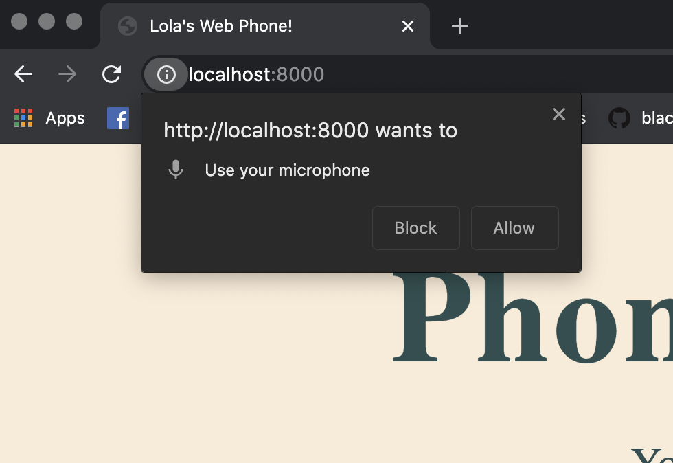

After you've created the peer, you'll want to get the browser's permission to access the microphone. We'll be using the getUserMedia() method on the navigator.MediaDevices object. The getUserMedia() endpoint takes a constraints object that specifies which permissions are needed. getUserMedia() is a promise which, when successfully resolved, returns a MediaStream object. In our case this is going to contain the audio from our stream. If the promise isn’t successfully resolved, you’ll want to catch and display the error.
script.js file:
function getLocalStream() {
navigator.mediaDevices.getUserMedia({video: false, audio: true}).then( stream => {
window.localStream = stream; // A
window.localAudio.srcObject = stream; // B
window.localAudio.autoplay = true; // C
}).catch( err => {
console.log("u got an error:" + err)
});
}
Let's explain the most important lines:
window.localStream = stream attaches the MediaStream object (which we have assigned to stream on the previous line) to the window as the localStream.
window.localAudio.srcObject = stream sets the <audio> element with the ID of localAudio's src attribute to be the MediaStreamreturned by the promise so that it will play our stream.
window.localAudio.autoplay = true sets the autoplay attribute of the <audio> element to true, so that the audio plays automatically.
If you’ve done some sleuthing online, you may have come across navigator.getUserMedia and assumed you can use that instead of navigator.MediaDevices.getUserMedia. You’d be wrong. The former is a deprecated method, which requires callbacks as well as constraints as arguments. The latter uses a promise so you don’t need to use callbacks.
Try calling your getLocalStream function by adding the following line at the bottom of your code:
getLocalStream();
Refresh your app, which should still be running at localhost:8000; you should see the following permission pop up:

Plugin in some headphones before you allow the microphone usage so that when you unmute yourself later, you don't get any feedback. If you didn't see the permission prompt, open the inspector to see if you have any errors. Make sure your JavaScript file is correctly linked to your index.html too.
This what it should all look like together:
/* global Peer */
/**
* Gets the local audio stream of the current caller
* @param callbacks - an object to set the success/error behavior
* @returns {void}
*/
function getLocalStream() {
navigator.mediaDevices.getUserMedia({video: false, audio: true}).then( stream => {
window.localStream = stream;
window.localAudio.srcObject = stream;
window.localAudio.autoplay = true;
}).catch( err => {
console.log("u got an error:" + err)
});
}
getLocalStream();